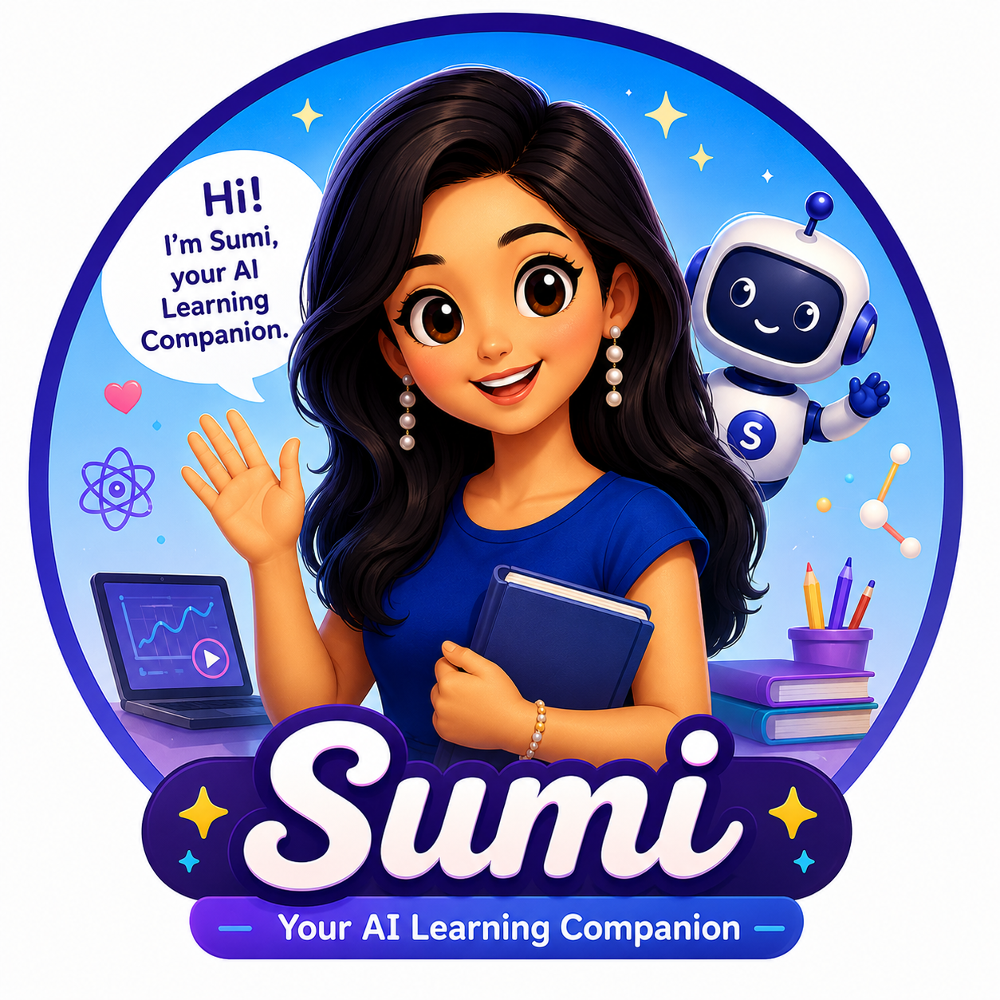

From a voice conversation to an AI-native learning experience that explains, demonstrates, acts, and verifies.
We show, rather than tell: the idea, the engineering method, the architecture, the difficult subject we chose, and the learner experience.
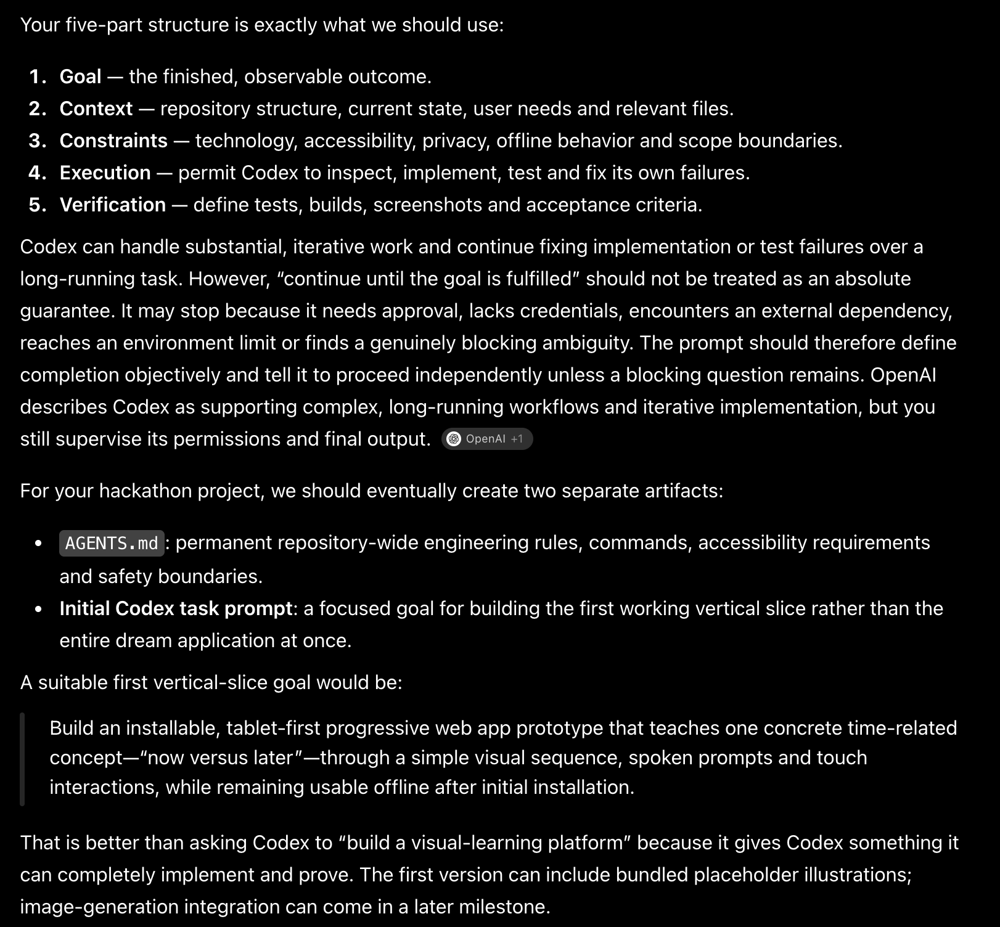
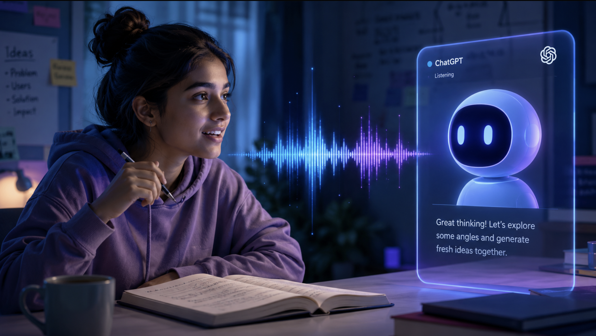
The conversation moved from a broad quantum platform to a sharper educational thesis: AI should not only answer. It should help the learner act, observe, predict, and understand.
When a concept becomes difficult, static content cannot see confusion, change its explanation, or demonstrate the next step at the exact moment it is needed.
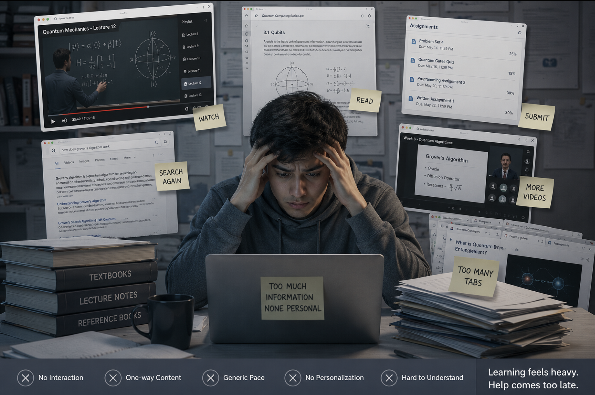
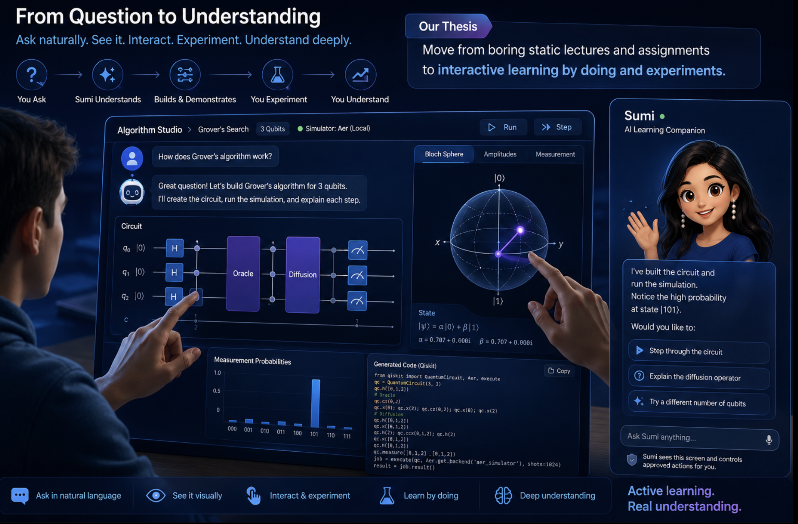
The learner should be able to speak naturally, watch the AI demonstrate a real action, make a prediction, repeat the experiment, and receive feedback grounded in the actual result.
In 1StopQuantum, a learner can describe an experiment in natural language, build a validated circuit, run a local simulation with Qiskit or Cirq, and inspect the circuit, Bloch state, amplitudes, measurements, and generated code.
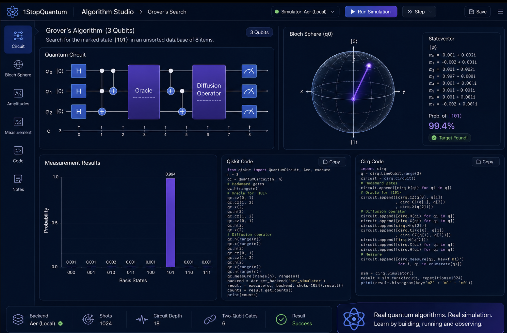
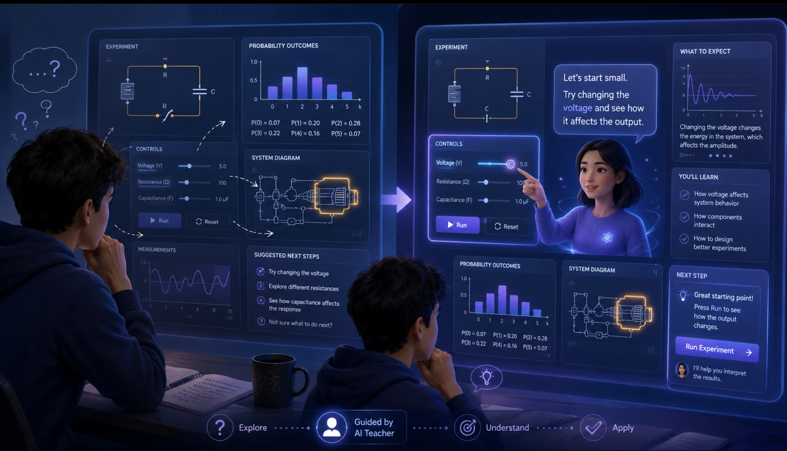
Questions are part of learning. A learner may not know which control matters, what to inspect, why a probability changed, or what experiment should come next.
Sumi understands the current screen, speaks, highlights controls, performs approved actions, demonstrates the experiment, and gives personalized feedback grounded in deterministic software. She is not a general-purpose chatbot: our reusable SDK and CLI let another learning site register its own screens, concepts, and safe actions.
The embedded demonstration could not be loaded.
The demo should show Sumi introducing Algorithm Studio, asking for a prediction, operating real controls, stepping through Grover search, running the local simulator, comparing the result, and revealing Qiskit or Cirq code.
Each screen exposes approved concepts and actions. The model interprets intent; deterministic handlers operate the interface; the simulator verifies the outcome.

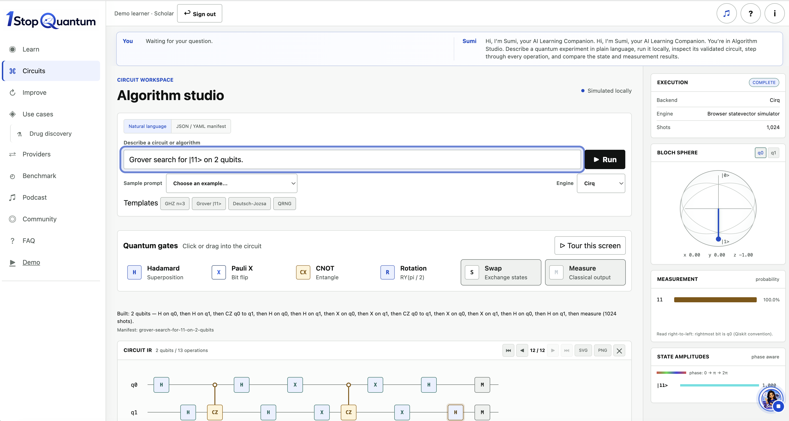
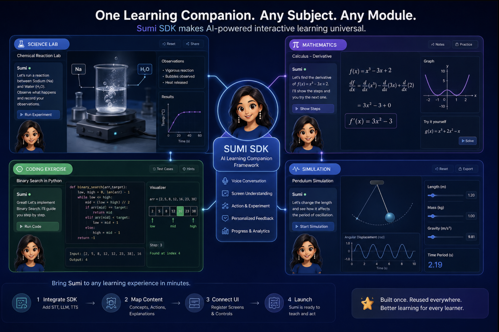
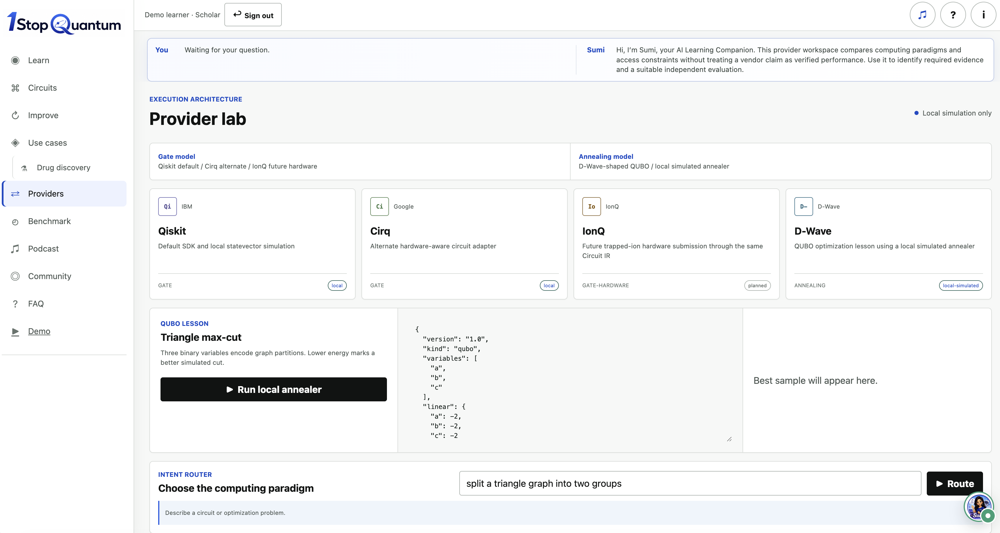
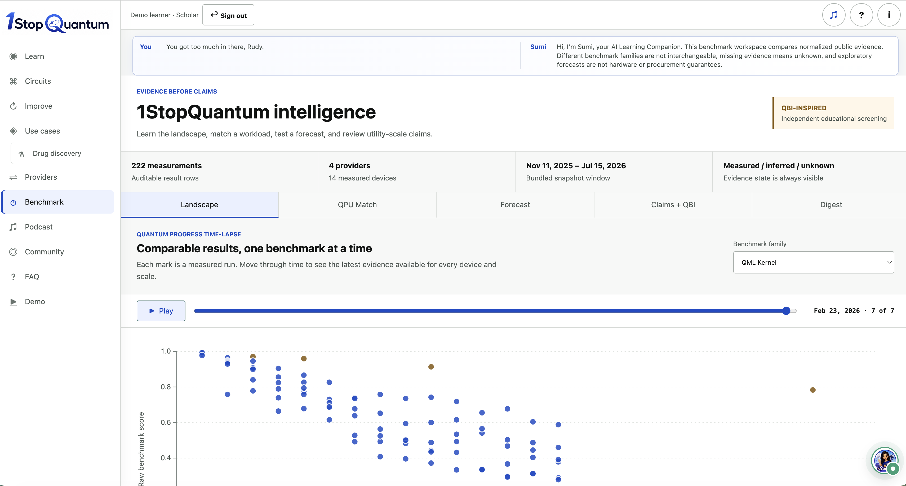
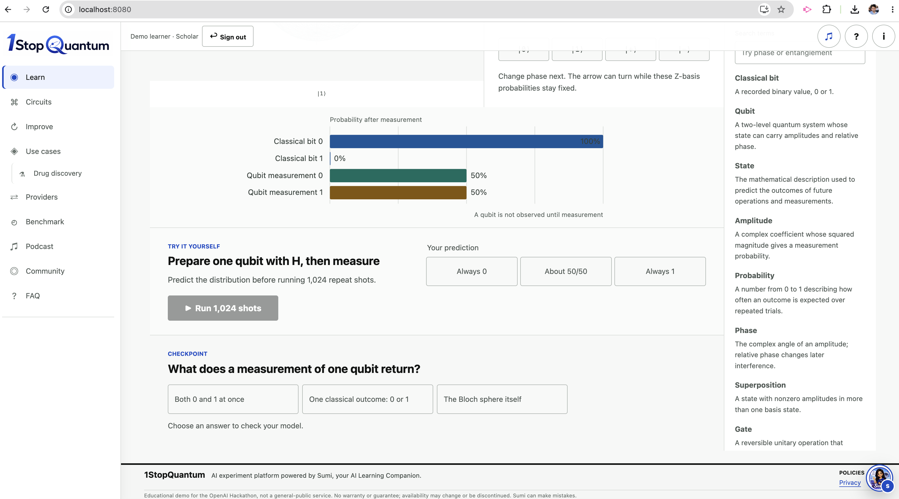
“Before Sumi, I could run the circuit, but I did not always understand what to inspect or why the result changed. With Sumi, I could ask naturally, watch each step, make a prediction, and receive feedback immediately.”
The goal is not to hide complexity. It is to make the path through complexity visible, approachable, and accessible.
Sumi is not perfect. She will make mistakes, and we will keep improving her. Sumi is purpose-built for learning applications—not a general-purpose assistant. With the Sumi SDK and CLI, any learning site can add a screen registry, connect its own LLM, speech-to-text, and text-to-speech providers, and give learners an AI companion that can explain, demonstrate, and act safely inside that module.
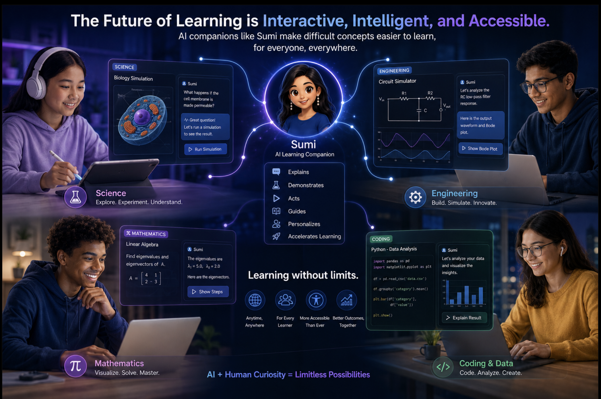